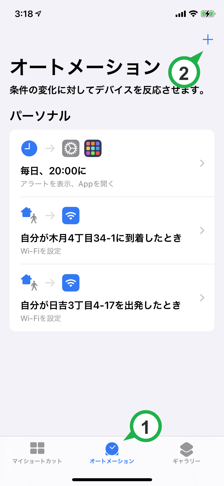
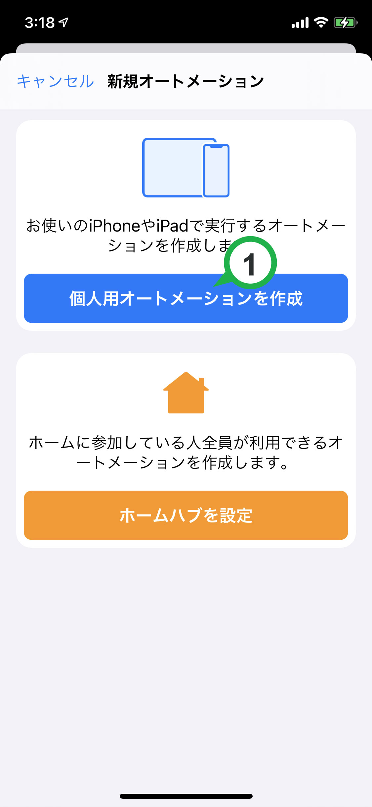
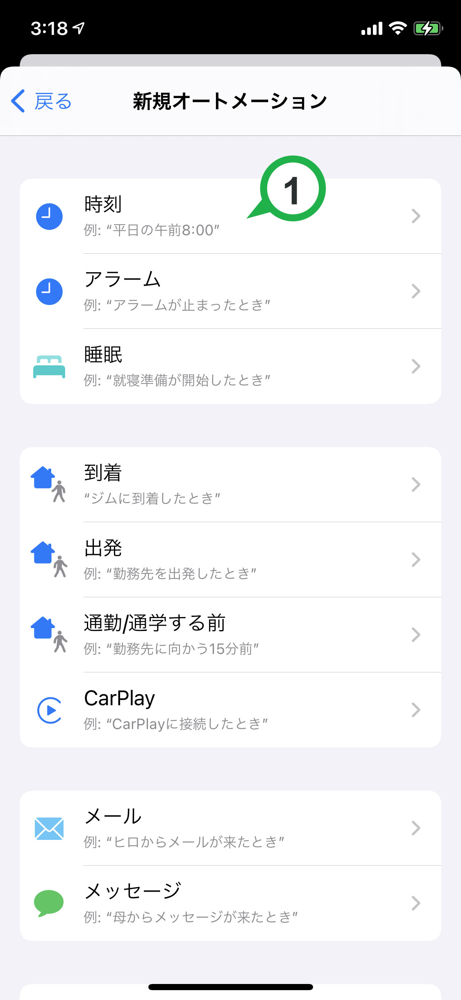
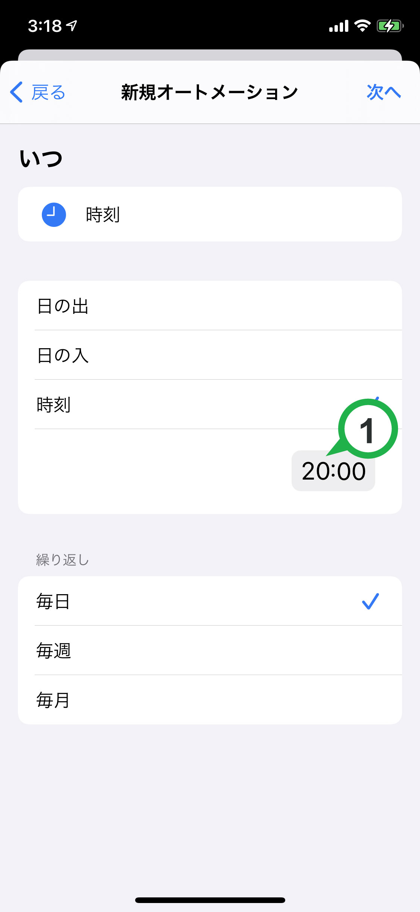
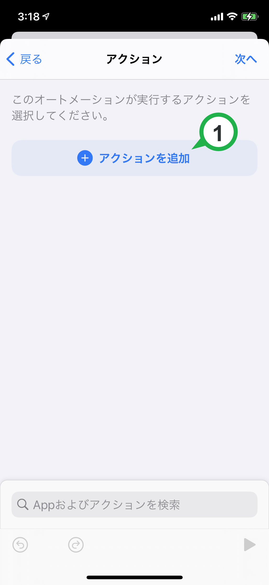
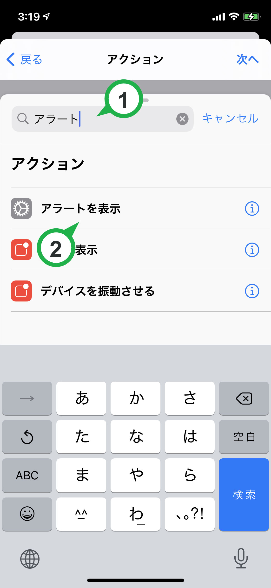
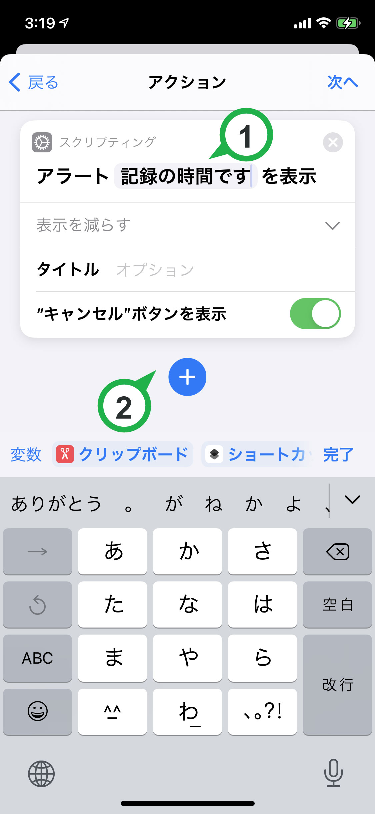
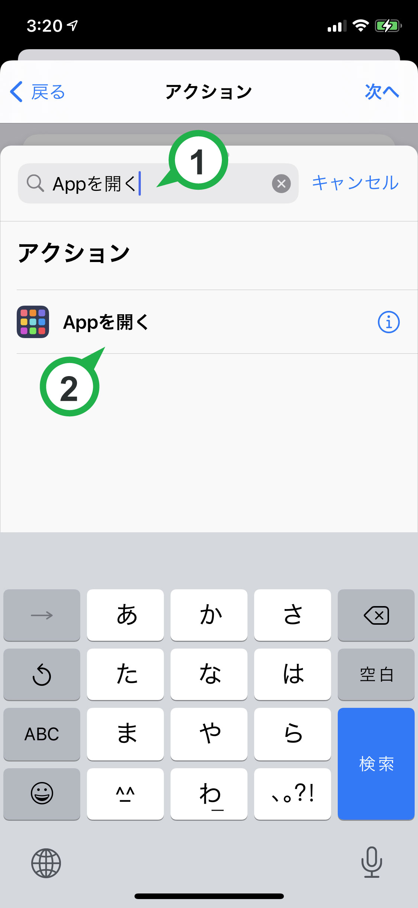
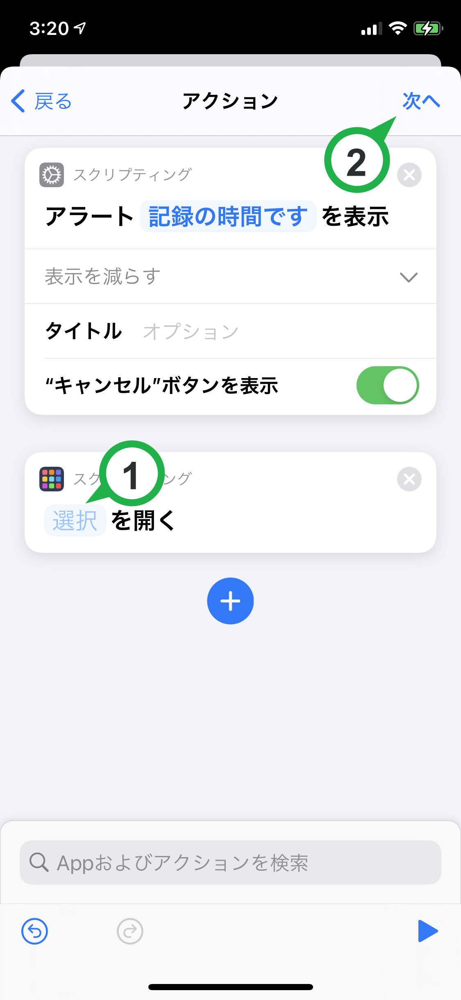

時間記録の通知をうけとるオススメ！

便利ポイント
１日に一度、記録の忘れがないか振り返る時間を決めて通知を設定できます。
記録するのを忘れる・記録を習慣化したい人にオススメです。
設定の説明は少し長いですが、一度設定できればかなり便利です。
設定方法
「ショートカット」アプリを使用します。持っていない場合はインストールしてください。

1. 下の「オートメーション」をタップします。上の画面に切り替わります。
2. 右上の＋ボタンをタップします。
「個人用オートメーションを作成」をタップします。

「時刻」をタップします。

1. 通知したい時刻を設定します。※ キーボードで数字入力します。例: 2000 で夜 8 時
2. 右上の「次へ」をタップします。
「アクションを追加」をタップします。

1. 「アラート」と入力して検索します。
2. 「アラートを表示」をタップします。
1. 「記録の時間です」など、通知に表示したい文言を入力します。
2. 下の＋ボタンをタップします。
1. 「Appを開く」と入力して検索します。
2. 「Appを開く」をタップします。
1. 「選択」をタップし、アプリ一覧から時間記録アプリを選びます。
2. 右上の「次へ」をタップして設定完了です。お疲れさまでした。